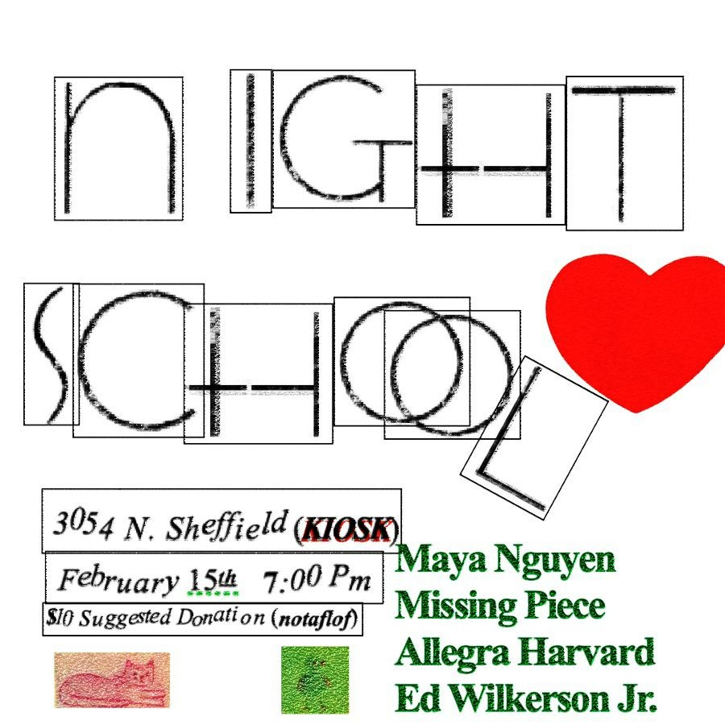

Night School
Chicago’s most dynamic audio/visual series, Night School presents an evening of experimental video and music. New groups of moving image artists and musicians join together to create spontaneous sound and art with the goal of surprising both themselves and the audience. Night school aims to create a space that is open to collaboration and pushes artistic boundaries, there are no aesthetic hierarchies, each show is about spontaneity and openness, you never know what you’ll see and you won’t believe what you hear.
This edition of Night School features:
Allegra Harvard/Ed Wilkerson Jr.
Missing Piece
Maya Nguyen